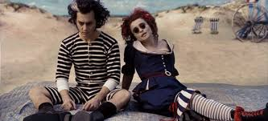
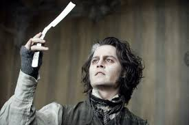

Sweeney Todd: O Barbeiro Demoníaco de Fleet Street é uma obra-prima sombria e visceral que transcende o gênero musical. A história, adaptada de uma lenda urbana, acompanha o retorno de Benjamin Barker, um barbeiro injustamente exilado, que retorna a Londres sob o pseudônimo de Sweeney Todd, movido por vingança contra o juiz Turpin, o homem que roubou sua esposa e filha. A trama é tecida com maestria, combinando elementos de terror gótico, drama, romance e comédia negra. A vingança de Todd é implacável e sangrenta, transformando sua barbearia em um cenário de horrores. Ele utiliza sua habilidade com a navalha não apenas para se vingar, mas também para alimentar um esquema macabro com a Sra. Lovett, sua vizinha e cúmplice, que transforma os corpos das vítimas em tortas de carne.
A música de Stephen Sondheim é excepcional, elevando a narrativa a um nível de profundidade emocional e teatral inigualável. As canções são ricas em significado, revelando a psicologia complexa dos personagens e suas motivações. A trilha sonora, ora melancólica, ora frenética, acompanha a atmosfera opressiva e claustrofóbica de Londres, contrastando com momentos de beleza e ternura, principalmente na relação entre Todd e Johanna. A relação entre Todd e a Sra. Lovett é um dos pontos altos do filme. A dinâmica entre eles é complexa e perturbada, uma dança macabra de cumplicidade e manipulação. A Sra. Lovett, com sua aparente ingenuidade, é uma figura tão sinistra quanto Todd, impulsionada por uma ambição desmedida e uma necessidade de amor e pertencimento.
O filme, dirigido por Tim Burton, é visualmente deslumbrante. A estética gótica é impecável, com cenários e figurinos que refletem a atmosfera sombria e decadente de Londres. A fotografia e a direção de arte contribuem para criar uma atmosfera de suspense e terror que prende o espectador do início ao fim. Em resumo, Sweeney Todd é mais do que um simples musical; é uma exploração profunda da vingança, da justiça, da loucura e da natureza humana. É uma obra de arte que permanece na memória muito tempo depois dos créditos finais, deixando uma marca indelével no espectador